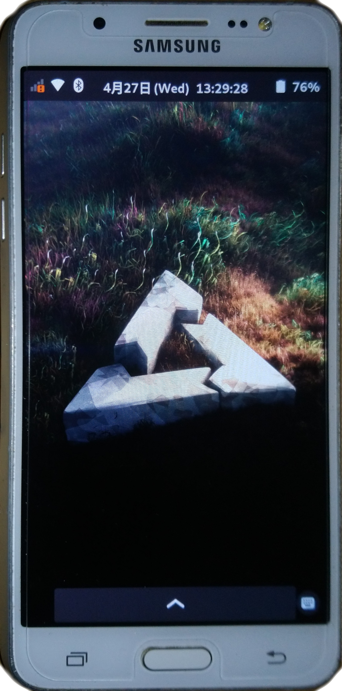

Samsung Galaxy J5 2016 (samsung-j5x)
|  | |
| Manufacturer | Samsung |
|---|---|
| Name | Galaxy J5 (2016) |
| Codename | samsung-j5x |
| Released | 2016 |
| Category | testing |
| Original software | Android 6.0.1 (Upgraded to Android 7.1.1) |
| postmarketOS kernel | Mainline |
| Hardware | |
| Chipset | Qualcomm MSM8916 Snapdragon 410 |
| CPU | Quad-core 1.2 GHz Cortex-A53 |
| GPU | Adreno 306 |
| Display | 720x1280 Super-AMOLED |
| Storage | 16 GB |
| Memory | 2 GB |
| Architecture | aarch64 |
| Unixbench Whet/Dhry score | 918.4 |
{kind=link}
| USB Networking |
Works
|
|---|---|
| Flashing |
Works
|
| Touchscreen |
Works
|
| Display |
Partial
|
| WiFi |
Works
|
| FDE |
Works
|
| Mainline |
Works
|
| Battery |
Partial
|
| 3D Acceleration |
Works
|
| Audio |
Partial
|
| Bluetooth |
Works
|
| Camera |
Broken
|
| GPS |
|
| Mobile data |
Works
|
| SMS |
Works
|
| Calls |
Works
|
| USB OTG |
Partial
|
| NFC |
Broken
|
| Accelerometer |
Partial
|
|---|---|
| Magnetometer |
Unavailable
|
| Ambient Light |
Unavailable
|
| Proximity |
Broken
|
| Hall Effect |
Works
|
| Ir TX |
|
|---|---|
| TrustZone |
|
|
This device is based on
Snapdragon 410
.
See the SoC page for common tips, guides and troubleshooting steps |
Contributors
Maintainer(s)
Users owning this device
- Hacker420 ( Notes: Currently unusable due to a swollen battery.)
- Natsu ( Notes: waiting to porting)
- SmP971 ( Notes: Runs LineageOS 17.1, wait for pmOS)
- WonderfulShrineMaidenOfParadise
Installation
lk2nd is a secondary bootloader that provides a standard fastboot interface.
- Download lk2nd-msm8916.img from Releases page on Github.
- Boot your phone to bootloader (download) mode by holding Volume Down and Home while powering up.
-
Follow
lk2nd instructions
to install lk2nd. Basically flash it to boot partition (
heimdall flash --BOOT lk2nd-msm8916.img) - Follow Qualcomm_Snapdragon_410/412_(MSM8916)#Installation to install postmarketOS.
|
|
Note: Enter lk2nd fastboot mode by pressing only Volume Down + Power ( without Home ). Pressing Home additionally will bring you to the Samsung Download mode. |
Audio
The headphone microphone and buttons are probably broken. Trying to fix them.
Touch keys
Needs a patched driver. See Tm2-touchkey .
Battery
sm5703
charger driver is WIP, so the charging is not controlled and there is no charging status reporting.
USB OTG
Another
sm5703
charger driver issue. J5 2016 is currently unable to power up a usb device in mainline. Try a hub with external power supply.
Accelerometer
k2hh
accelerometer is not so stable for auto screen rotation, which suggests you to use fixed portrait or landscape mode.
Proximity Sensor
The driver for
cm36672p
proximity sensor is not available. There is another grip sensor
sx9310
but the interrupts doesn't work properly either.
NFC
The PN547 NFC chip uses a pad supply voltage (pvdd), which needs a patched driver.
Photos
-
Downstream
{kind=link}